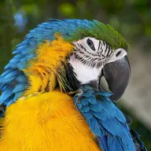

Мерехтіння

Випадково змінює непрозорість шару, змушуючи його мерехтіти.
Налаштування
| Налаштування | Тип | Діапазон | Типово |
|---|---|---|---|
| Частота | Число | від 0 Hz до 60 Hz | 7 Hz |
| Сила | Число | від 0 до 1 | 0.75 |
| Зерно | Число | від 0 до 100 | 0 |
| Режим | Вибір | Блимання, Рівномірно | Блимання |